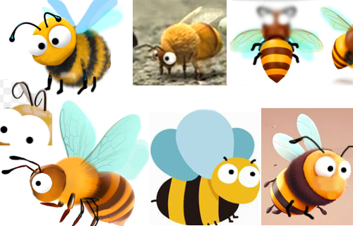
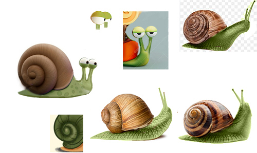
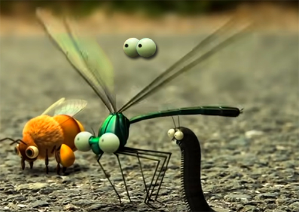
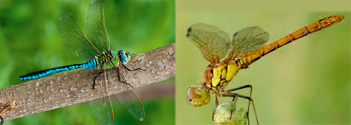
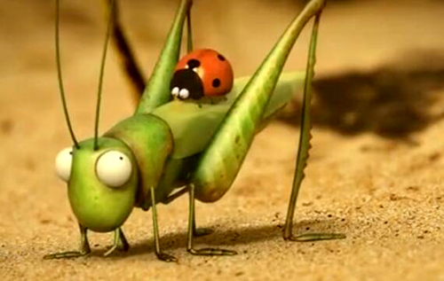

Modeling Requirements
Please add us to the discord: candyx1229#8668
For the most part, these characters will be presented in a God's-eye view, but
these models will also be used for close-ups of the cards and CG video. Btw, To
ensure better picture quality, we will render each action as a sequence of
frames separately.
Please make the lines as round and full as possible and avoid angles. The left
and right parts should be perfectly symmetrical. keep the light source in the
same position from character to character, with the light source from the top
down, bottom with a natural shadow. This ensures that the light source remains
constant when the character is flipped from side to side.
These model needs to ensure that we can successfully perform the common actions
in the reference video, and we will create actions for the characters to Moving,
Flying, Fighting, Skill, Resting, Injured, Dying in the game. please take care of the
DETAILS
and we need you to use your imagination. Please do your best. we want to make a beautiful work and include your name in
the list of game productions.
1.Our style is between funny cartoons and real
animals, and we need to get closer to the normal body proportions of real
animals. cartoons is about 40%, Real Animals is about 60%.
2.All of our characters have the same style of eyes(Standard Sphere) milky white
orbs with pure black pupils that look like black dots.
01.Ant
「This is one of the main character of the game」
1.Please modeling the character according to the above pictures,
is the design we drew, it meets about
99% of the needs.
2.The eyes are round and two eyes are close together, no mouth, 6 legs.
trying to keep it cute. The scale of each part, Including fineness of part
should be consistent with the above picture.
3.Please add a removable tooth for ants for spare use.
after upgrading it will turn into red ants and we will use it.
4.Neck come in multiple colors to differentiate between players.
#00D2FF
#FF3535
#42E500
#FF7F17
#BA42FF
#FFCC00
Animation Reference:
https://www.youtube.com/watch?v=4RlJhYxtNco
https://www.youtube.com/watch?v=De1FGoSrdsg
02.Ladybug
「This is one of the main character of the game」


1.The above picture is for reference only, it meets about 90% of the needs.
Try adding a antenna. (Tentacles)
2.Please note that each dot on the back
of the ladybug should be a standard circle, not an irregular circle.(The
reference picture is irregular circle)
3.The structure of the 6 legs does not
need to be too complicated, it can be slightly simpler than the reference
picture.
Don't forget the individual flying parts of the internal wings.
4.Back come in multiple colors to differentiate between players.
Animation Reference:
https://www.youtube.com/watch?v=OBg8TFQddqc
https://www.youtube.com/watch?v=-uwZIdcflDE
03.Bee
「This is one of the main character of the game」
1.The above picture is for reference only, it meets about
75% of the needs. multiple options are needed to determine direction first.
2.The wings are 4, light blue, no mouth, 6 legs.
Animation Reference:
https://www.youtube.com/watch?v=pETQTk-FeOI
04.Snail
「This is one of the main character of the game」

1.Please modeling the character according
to the left, is the design we drew. it meets about
100%.
2.The eyelids need to be able to allow us to complete the opening and closing of
the eyes, includes upper and lower eyelids. The body, in addition to crawling,
we will have his whole body completely back in his shell.
Animation Reference:
https://www.youtube.com/watch?v=cTxcAuiJW-o
05.Dragonfly
「This is one of the main character of the game」


1.The above picture is for reference only, it meets about 80% of the needs. multiple options are needed to determine direction first.
2.Two eyes are so close together that they don't need to be separated, No mouth,
The wings are 4 and 6 legs. The tail is divided into 6 sections and there
doesn't need to be any part at the end of the tail. The tail should go from thin
to thick and back again, and the end of the tail should be round naturally and
it's not pointy.
Animation Reference:
https://www.youtube.com/watch?v=CAJvPtblH4A
https://www.youtube.com/watch?v=-uwZIdcflDE
06.Grasshopper
「This is one of the main character of the game」

1.The above picture is for reference only, it meets about 90% of the needs. multiple options are needed to determine direction first.
2.We don't need two beards like that on his lips. The foot on the reference
picture doesn't look too good, the foot should be a little thinner, the
structure doesn't need to be too complicated.
Animation Reference:
https://www.youtube.com/watch?v=QxuRjvOb-hY
{kind=link}